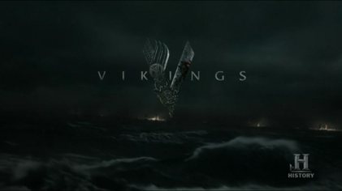

1 ASSIGNMENT
Pick a TV show that had its premieres on TV and thus has some viewership numbers reported on Wikipedia. E.g. Suits (see table just above the References)
Then create a short report (you can copy the content from Wikipedia or other pages for this task) that contains, for example:
(do a commit after each step!)
- A brief description of the show (use italics for names).
- A photo with the logo or a shot from the show itself.
- A summary of some basic statistics (e.g. on viewership or ratings).
- A graph of the viewership over time.
- A graph of the episode-to-episode (or season-to-season) changes in viewership.
- A short description of the observed changes that includes inline references to numbers (e.g. the viewership decreased by
insert_calculated_numberbetween seasons 3 and 5). - Make sure your report looks nice -> this time we’re mostly interested in the output and not necessarily the codes used to achieve it.
renderyour report and save it in the relevant folder of your repo.- Commit the changes and push them to Github.
Vikings is a historical drama television series created and written by Michael Hirst. Vikings is inspired by the sagas of Ragnar Lodbrok, a Viking who is one of the best-known legendary Norse heroes and notorious as the scourge of Anglo-Saxon England and West Francia. The show portrays Ragnar as a farmer from the Kattegat who rises to fame by raiding England and eventually becomes a Scandinavian king, with the support of his family and fellow warriors. In the later seasons, the series follows the fortunes of his sons and their adventures in England, Scandinavia, Kievan Rus’, the Mediterranean and North America.

2 Rating Statistics
The show has an 8.5/10 rating on IMDB.
Rotten Tomatoes assign it 93% with the following breakdown.
| Season | Score |
|---|---|
| 1 | 82% |
| 2 | 93% |
| 3 | 100% |
| 4 | 92% |
| 5 | 92% |
| 6 | 100% |
2.1 Ratings over Time
Viewership numbers are not easily accessible - one estimate places the total view count up to 4.36m.
Vikings ratings have decreased with every season, but remained strong, averaging above 7.5.

Average ratings decreased from 8.3m to 7.7m. Rating dispersion increased over time as interest in the show varied. Overall, ratings remained strong well into the maturity of the show, unlike many others.